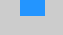

Title
Specifies the main window title.
Note: The title is overridden by the command line parameter -w.
Use tab titles
If checked, main window title will be set to the active tab's title.
Main format
Specifies the text used to format the main window title. See text formatting syntax.
Tab format
Specifies the text used to format the tab title. See text formatting syntax.
Trim tab titles
If checked, tab titles will be trimmed to specified number of characters.
to ... characters
Specify the maximum number of character of the tab name.
from ... characters at the end
Specify the number of characters to take from the end of the string. The total number will not exceed the character width.
Icon
Specifies custom icon for the main window. If left empty, default ConsoleZ icon will be used.
Use tab icons
If checked, main window icon will be set to active tab's icon.
Initial position
When checked, allows you to specify initial window position. Otherwise, initial ConsoleZ window position will be determined by Windows.
X, Y
These values specify initial ConsoleZ window position.
Save on exit (1)
If checked, ConsoleZ window position will be saved on exit.
Initial size
When checked, allows you to specify initial window size. Otherwise, initial ConsoleZ window size will be determined by number of columns and rows of the shell.
W, H
These values specify initial ConsoleZ window size.
Save on exit (2)
If checked, ConsoleZ window size will be saved on exit.
Snap to desktop edges
When checked, ConsoleZ window will be snapped to desktop edges.
Distance
Specifies window snap disance.
Docking
Specifies initial window docking type.
| None | |
| Top left | |
| Top right | |
| Bottom left | |
| Bottom right | |
| Top middle |  |
| Bottom middle | |
| Right middle | |
| Left middle |
Z order
Allows you to specify window Z order.
| Regular | |
| Always on top | Places the window above all non-topmost windows. The window maintains its topmost position even when it is deactivated. |
| Always on bottom | Places the window at the bottom of all other windows. The window maintains its bottom position even when it is active. |
| Pinned to desktop | Note: Pinned to desktop currently works only in Windows Explorer (i.e. other shells like Litestep are not supported) |